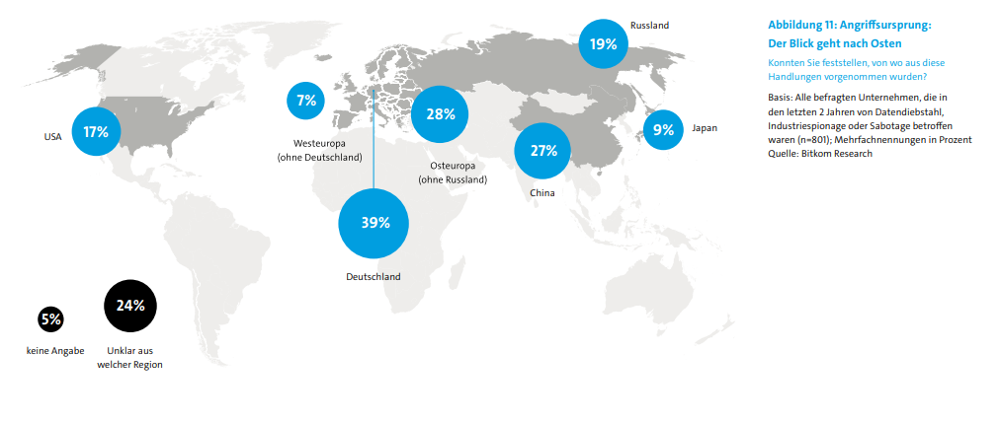

Die Täter sind in 1/3 der Fälle frühere Mitarbeiter, die dann Schaden verursacht haben. Ca. 1/4 der Betroffenen behaupten es wären Ex-Mitarbeiter, ohne dies belegen zu können, hingegen sagen 2/5 der Betroffenen, dass es auf Einzeltäter, z.B. Hobbyhacker zurückzuführen ist. 1/5 gehen von organisierten kriminellen Organisationen oder von den Wettbewerbsrivalen aus. Der restliche Anteil geht an Angriffe auf die Kuriere mit 16% und Ausländische Nachrichtendienste.
Zu erkennen ist, dass die Angriffe größtenteils vom Osten kommen (79%), gefolgt von lokalen Orten in Deutschland 4/10 (39%) und 1/4 war unbekannt bzw. ungelöst (24%). Aber wie werden Unternehmen drauf aufmerksam? Es wurde angegeben, dass rund 62% der Mitarbeiter, die darauf durch eine Veränderung oder einen Fehler Aufmerksam werden. 54% wird von der Firewall oder vom Schutzsystem erkannt, diese geben ein Warnsignal. Bei 28% der Fälle war es reiner Zufall, dass die Spionage erkannt wurde.
 hier gehts nach oben